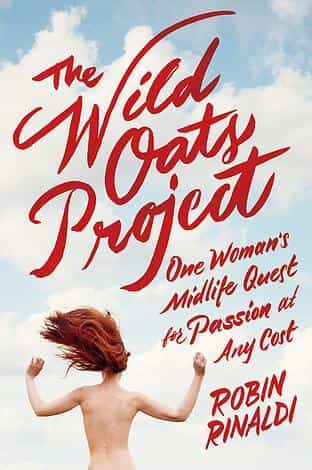
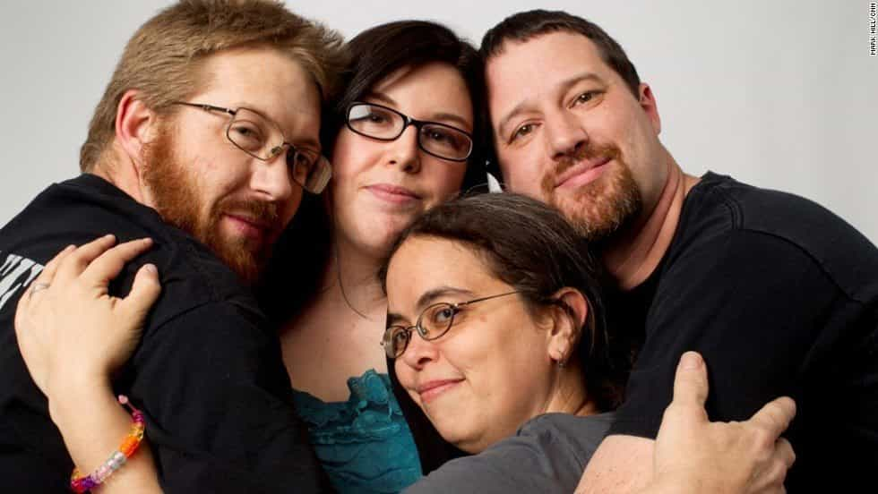

< < < Back
Robin Rinaldi’s Wild Oats Project Shows Why Women Should Not Sleep Around – Return Of Kings
Recently, author Robin Rinaldi made waves with the publication of her memoir The Wild Oats Project, about how she spent a year sleeping with men and women with the permission of her husband after badgering him into entering an open marriage. Her reason for cracking up a nearly two decade-long marriage? Boredom. I kid you not:
I broke the news to Scott that I wanted an open marriage in early 2008, a few months after his vasectomy. “I won’t go to my grave with no children and four lovers,” I told him repeatedly. “I refuse.”
I haven’t read The Wild Oats Project, mainly because if I need to induce vomiting, ipecac is both less expensive and less painful. But Rinaldi’s press blitz about the book gives away its crucial (and entirely expected) twist: after concluding the “project,” Rinaldi divorced her loving husband and ran off with one of the men she’d slept with. Turns out that lotsa cocka is as conducive to a woman’s happiness as a Glock in the mouth is to brain function.
The enthusiastic response to Rinaldi’s masturbatory memoir—notwithstanding this amusing negative review from the Washington Post—is a prime example of the double standard in sex writing. Men like Roosh and myself who write about our experiences sleeping with girls abroad are libeled as “sex tourists” and “rapists.” Meanwhile, female typists like Rinaldi and Lena Dunham can brag about committing disgusting acts—from molesting their little sisters to divorcing their husbands out of boredom—and not only get published by major companies, but get movie deals.
More importantly, The Wild Oats Project puts the lie to a popular myth in society: that women need to slut it up in order to be fulfilled. “Sowing her wild oats” was supposed to be a fun experiment for Rinaldi, one that would strengthen her relationship with her husband. Instead, it ended her marriage. She’d be happier if she’d just behaved like an adult and stayed with her man.
How Sluttiness Corrupts Women And Ruins Relationships

It’s an established fact that girls who whore it up are less suitable as wives and mothers. No, I’m not making that up: studies show that the greater the number of sexual partners a girl has when she gets married, the greater the likelihood that she’ll end up divorcing her husband. Even having just one partner before tying the knot causes a girl’s chance of divorce to skyrocket. Men, marry virgins if you want to be as safe as possible from the family courts.
The reason why sluts are more likely to divorce is because they’re incapable of committing to anything. As a species, females are inclined to flakiness and indecisiveness, and promiscuity kicks these defects into overdrive. It takes time to develop a relationship or marriage: time to get to know the other person, appreciate their qualities and flaws, and ultimately reap the rewards. Sluts sleep around because they’re addicted to instant gratification, which is why promiscuity in women is also correlated with obesity, drug/alcohol abuse and other undesirable traits.
The elephant in the room
Robin Rinaldi’s book is a prime example of this. According to the excerpt I posted above, she had slept with only four men (including her then-husband) when she began her “project.” One year and ten men later, her personality had become so warped that she could no longer sustain a marriage that had lasted for nearly two decades. She tries to spin her story as a necessary journey of self-fulfillment instead of what it is: the sad story of a sad woman who detonated her relationship out of selfishness.
Additionally, the idea that women have to sleep around to gain “experience” is completely bogus. Cocks aren’t tampons; you don’t have to toss them in the trash after the first use. Every bit of sexual experience a girl “needs” can be earned from a committed relationship. For example, when I was in college, my longest relationship was with a girl who was a virgin when I first met her. A month after we started having sex, I had trained her up to be my own personal freak in the sheets.
While I don’t care if women sleep around—people should be free to do whatever they want—choices have consequences. If you spend every day smoking meth, you’ll eventually grind your teeth into a fine dust and develop the physique of a starving Ethiopian. If you sleep around, you become less desirable to men who want a committed relationship. You can stomp your feet and cry about how unfair it is, but there’s nothing you can do about it.
Why Open Relationships Are A Stupid Idea

The Wild Oats Project also throws acid on another popular leftist idea: that monogamous relationships are “uncool” or a social construct.
For the past decade or so, the left has been claiming that marriage and lifelong fidelity is an aberration brought about by the Agricultural Revolution, and that humans would be better off if they were more promiscuous. Hack pop science books such as Sex at Dawn push this idea by speciously arguing that hunter-gatherers of old were more sexually liberated than the humans who came after.
As Robin Rinaldi’s experience shows, making a relationship “open” in order to strengthen it is like destroying the village in order to save it. In the New York Post interview, Rinaldi describes how she became livid when she discovered that her husband had been having a relationship with a younger woman, despite her own sleeping around. Turns out that all the pretty platitudes in the world couldn’t help her overcome her feelings of jealousy.
Sexual exclusivity is one of the cornerstones of a romantic relationship. If a man and a woman aren’t committed to each other—whether it’s because of cheating or because one of them doesn’t want to have sex anymore—their relationship will eventually fall apart. There are exceptions, but for most people, “lame,” “conservative” sexual mores are the best path to personal contentment.
The Wild Oats Project is a spectacular example of the idiocy of “empowered” women. What little Rinaldi has shared with the public shows her to be a deeply selfish and clueless woman, who thinks that writing a story about how she cheated on her husband and left him makes her look good. Her imbecility should serve as a warning sign to both women and men.
Read More: Women Are Sluts If They Sleep Around But Men Are Not


{kind=link}